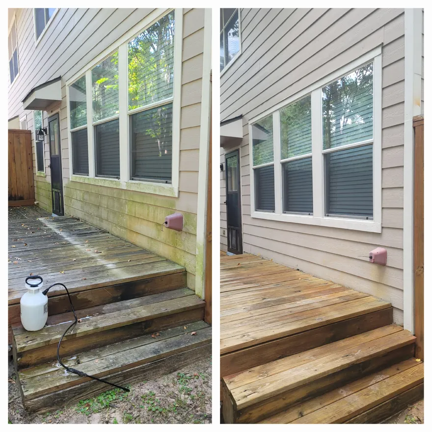
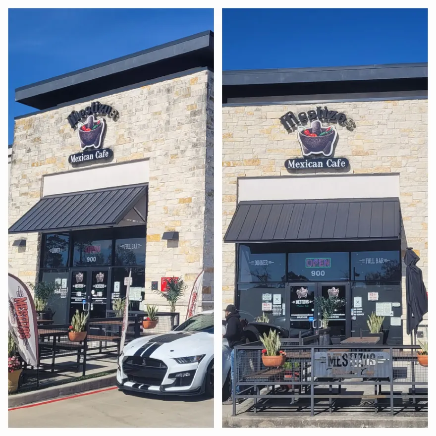
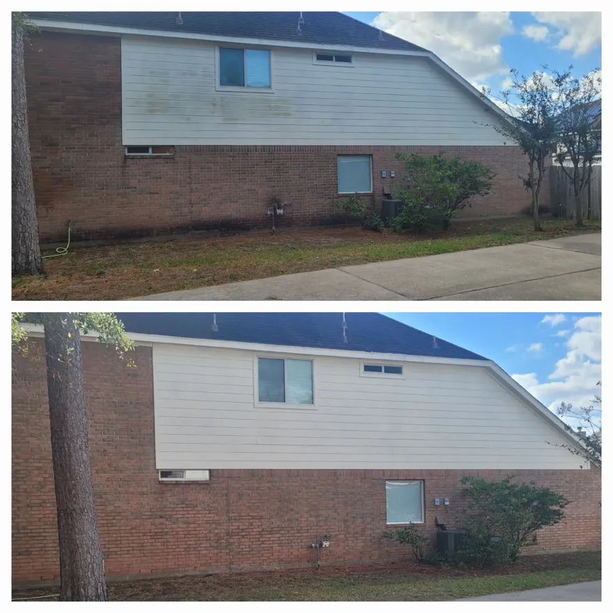
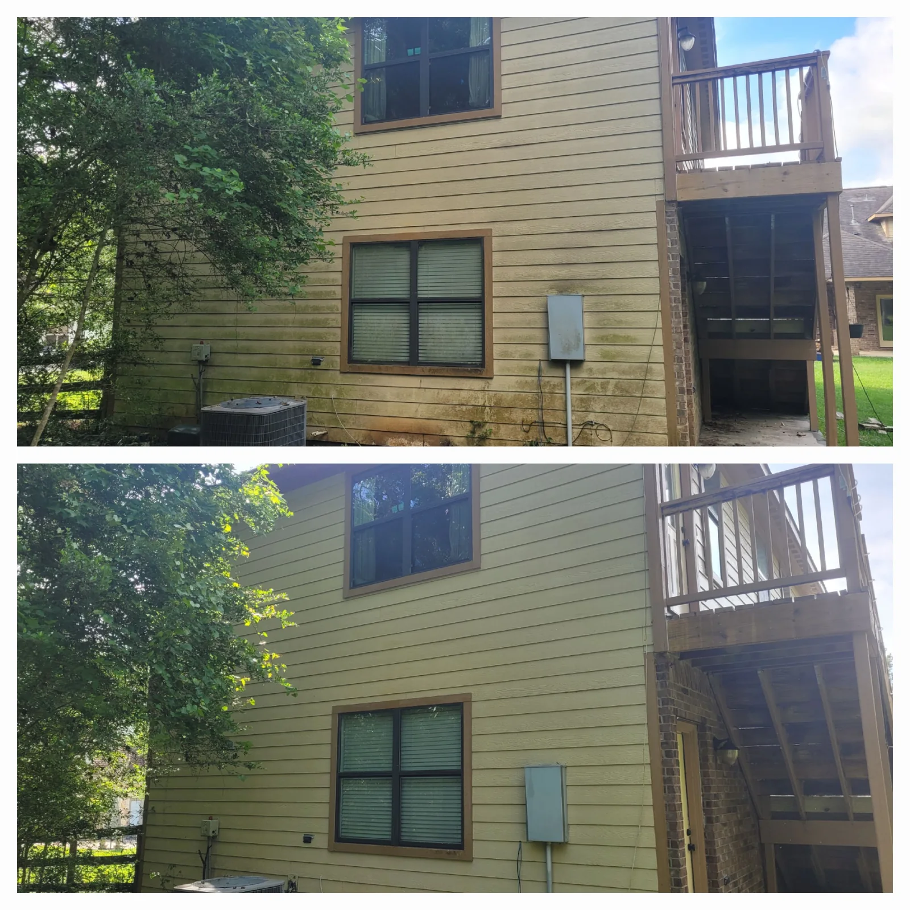

Let us make
your home POP.
Soft washing, pressure washing, windows and gutters — the exterior cleaned properly, by the owner, with a written quote before anyone picks up a hose.
- Free written estimates
- Owner on every job
- Residential & commercial
Watch the work
Short clips from real Houston jobs — no logos, no music, just the clean.
Not everything
wants pressure.
The method should match the surface. Switch between them to see which one your house needs.
Clean the house without touching the finish.
A soft wash uses low pressure and a diluted cleaning solution. The mix kills algae, mildew and pollen, then a gentle rinse carries it away. Nothing gets stripped, etched or forced behind the siding.
- Siding, stucco and brick
- Painted wood and trim
- Roofs and shingles
- Fences and decks
Soft washing is the default for anything with a finish to protect.

Everything outside
the front door.
Four core services and two extras that come up on almost every property. Every quote is written, not guessed on the phone.
Soft washing
Siding, stucco, brick and roofs cleaned at low pressure with a solution that kills the growth instead of blasting the finish.
View service 02
02
Pressure washing
Driveways, sidewalks, patios and pool decks cleaned with a surface cleaner for an even finish — no wand stripes.
View service
03Window cleaning
Exterior glass, frames, screens and tracks cleaned by hand — the details that make a whole house look sharper.
View service
04Gutter cleaning
Debris out by hand, downspouts flushed and tested, fascia rinsed — before the next Texas storm finds the weak point.
View service 05
05
Driveways & concrete
Driveways, walkways, pool decks and patios brought back to an even, uniform finish.
View service
06Commercial exterior
Storefronts, sidewalks, dumpster pads, entryways and building washes — scheduled around your hours.
View service

Clean is a result.
Care is the method.
Anyone can point a pressure washer at a house. The difference is in what gets protected, what gets pre-treated, and what happens after the big pass.
ProSoft of Texas is owner-operated by Charlie Dwiggins, working across Greater Houston, Texas. The approach is simple: identify the surface, choose the right pressure and chemistry, protect everything that should not get wet, and do not leave until the edges match the middle.
A small area tells us more than a phone description — especially on stucco, painted wood and older concrete.
Plants, furniture, pets and the neighbour's car. Water goes where it is supposed to and nowhere else.
The job is done when you have walked it and anything you spotted has been fixed.
Real houses.
Real difference.


Three steps,
then the POP.
You know who is coming, what they will use, and what it costs before anyone pulls into the driveway.
- 01
Walkaround & quote
Fifteen minutes on site. We test a small area, check the surface and the water source, and send a fixed written price.
- 02
Protect & clean
Plants covered and wet down, windows closed, then the right method for each surface — soft wash or surface cleaner.
- 03
Walk it with us
We walk the property together, fix anything you spot, and leave the before-and-after photos with the invoice.
Greater Houston,
and around it.
Based in the Houston metro and working the surrounding communities. If you are just outside the list, call — the answer is usually yes.
(281) 235-7491- Houston
- Katy
- Cypress
- Spring
- Tomball
- Sugar Land
- Pearland
- The Woodlands
- Richmond
- Fulshear
- Magnolia
- Conroe
Ready to make it
POP?
Send the address or call Charlie. One walkaround, a written quote, and a date — no deposit, no pressure.